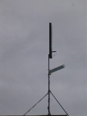
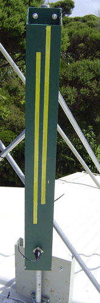
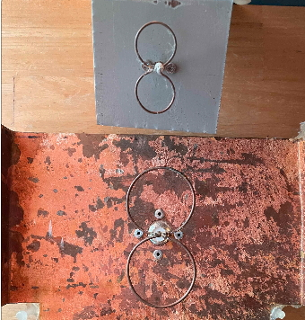
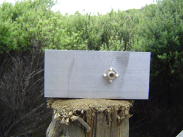
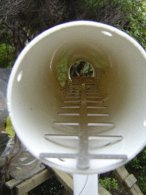

The Lucent antenna also gave us a good indication that a signal could be carried over the trial distance and terrain, before we committed to building our own antenna.. We concluded that as long as we had line of sight, with minimal foliage in the path, that we could transmit between any two points in the Karekare area (easily up to ~4Km we needed). That turned out to be mostly true.
|  |
8+8 Slotted waveguideWe were looking for a high gain omnidirectional antenna for our access points. Searching the net for antenna designs we came across Trevor Marshall's waveguides web site. This has a good description of the slotted waveguide design he built and several references to other designs including Paul Wade's (W1GHZ) online "Microwave Antenna Book". Using Paul's Excel spreadsheet and looking at Trevor's and others designs (such as Rob Clark's downpipe), we built a test 8+8 slotted waveguide (eight slots each side) from a length of 100x50 (x3mm thick) aluminium rectangular hollow box section. This proved to have a good 360 degree signal, Testing against the Lucent yagi, the slotted antenna had an excellent signal at our 3Km test point. We did find a blind spot at 45 degrees to the antenna and about 20 degrees below it (understandable, the gain is achieve through restricting the vertical signal coverage). Rotating the antenna brought the signal up to a usable level. We will look at adding "wings" to the antenna to see if this evens out the coverage. |
|  |
8 Single sided Slotted waveguideWe were also looking for a high gain 180 degree antenna for our central site. Having lots of spare 100x50 aluminuim, we built a test single sided 8 slot waveguide This proved to have a good 180 degree signal, Testing against the Lucent yagi, the slotted antenna still had an excellent signal at 3.5Km. |
These have a really good gain, and are simple to make. We now use these at nearly all the client ends, mounting them inside the router box (see picture.). We make the backing plate wider than is strickly necessary, so that it fits in the box better, and glue them in place. We are using them over 3km paths, with a single sided 8 slot waveguide at the far end. We have also used them at both ends, as point to point relays, over a 2.5km path, with 32mW tx power.
|  | What we built (14dBi) |
|  |
Looking for a cheap and easy to construct client antenna, we came across, amongst others, tin can (circular waveguides)
and brick (rectangular waveguides) designs. We built a rectangular waveguide from an offcut of the 8+8 slotted
waveguide and tested it against the Lucent yagi and the 8+8 slotted waveguide. It proved to have a usable range somewhere
around 2km. With the 1/4wave dipole probe, it failed at our 3Km test point, but was working just before 2Km. With the cone probe, it was still working well at 3km.
Details of Rectangular Waveguide built |
I came across the Horn design and will trial something like it. The horn is increasing the gain of the simple waveguide.
|  | The Lucent Yagi antenna is superior to the simple waveguide, so we went looking for simple to build yagi designs. We have yet to construct one, but came across Andrew Hakman's and Darren Fulton's site, which has links to others. I don't think we will build any of these now. The bicircles have the same gain, are smaller and simpler to make. |
I'm not sure how much use this will be in our situation, but this is has reasonably good gain for its size. An example is on Tim's web page.
Helicals use circular polarization, left or right, rather than vertical or horizontal. They will also happily work with a vertical or horizontal source (in reality the signal that arrives at the receiver is probable somewhere between anyway). They can be really useful in situations where there are reflected signals arriving at the antenna causing interference. A reflected circular polarized signal reverses its polarization and is therefore much weaker compared to the direct signal of the same polarization as the antenna. An example of a homebuild helical and another good site by Dr. Remco den Besten, PA3FYM